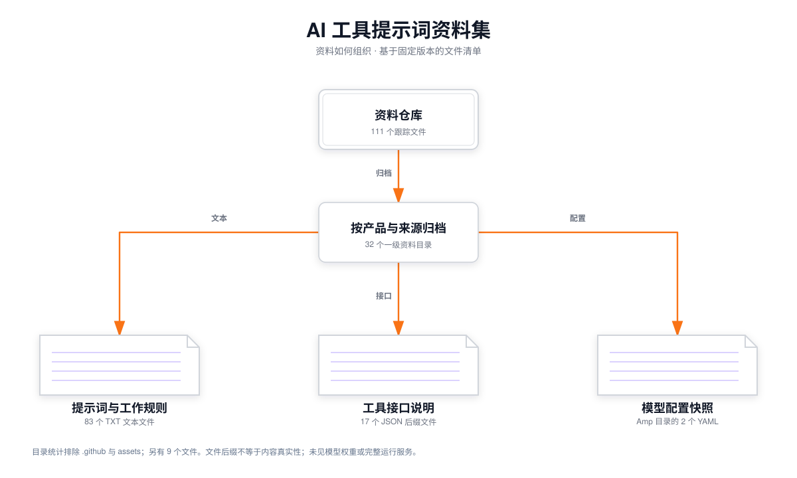

{kind=link}
{kind=link}
这个仓库的实际能力
提供可阅读、可比较的 AI 产品行为规则资料。它帮助你理解“什么时候搜索、如何规划、怎样调用工具、何时交付”等设计思路。
文件名和正文代表该仓库的收录内容；本次没有逐项验证是否来自厂商、是否完整、是否仍为现行版本。
READ THE REPOSITORY → DRAW THE FINDINGS
它按产品与来源收录系统提示词、工具定义和配置快照。你可以研究里面的任务分解、工具选择与交付规则；模型权重、工具执行代码和完整产品环境仍需另外准备。
这三张是仓库说明图。查看更多表达方式：全部图类型与实际效果 →

111个 Git 跟踪文件
32个产品或来源目录
13 / 17JSON 文件可直接解析
固定提交 1e4203a83 个 TXT 是提示词和规则等文本资料；17 个 JSON 后缀文件主要收录工具说明；两个 YAML 位于 Amp 目录，含模型名称和调试输入。另有 README、许可、图片和维护文件等 9 个文件。
这里是本次根据阅读结论编写的图纸：节点、文字、关系和位置已经明确。Fireworks 负责绘制与检查；它没有替我读取这个仓库。
正在读取图纸…
提供可阅读、可比较的 AI 产品行为规则资料。它帮助你理解“什么时候搜索、如何规划、怎样调用工具、何时交付”等设计思路。
文件名和正文代表该仓库的收录内容；本次没有逐项验证是否来自厂商、是否完整、是否仍为现行版本。
我盘点文件并阅读代表性资料，写出三份中文图纸；Fireworks 实际生成 SVG、PNG 与离线交互 HTML，并检查连线、文字和构图。
三张图均通过五项程序检查，已查看实际 PNG。这里展示的是分析结果，没有运行 Manus、Cursor 或 Kiro，也没有生成 GIF。
| 资料样例 | 本次读到的机制 | 与你的工作如何对应 |
|---|---|---|
| Cursor | 区分语义检索、精确匹配、已知文件阅读等工具使用条件；独立工具文件含 13 个定义。 | 分析陌生仓库时，先决定怎样找证据，避免只凭文件名推断。 |
| Kiro | 规格流程分别组织 requirements.md、design.md、tasks.md。 | 做自己的项目时，先明确需求，再设计，最后拆执行任务。 |
| Manus | 事件 → 工具选择 → 执行 → 观察 → 迭代 → 交付；工具文件含 29 个定义。 | 让研究任务按结果继续推进，并明确工具返回什么、任务何时完成。 |
| Amp | YAML 包含模型名称、角色、提示词及调试输入信息。 | 理解模型配置和上下文如何组织；配置快照本身不能运行模型。 |
对 17 个 JSON 后缀文件执行标准解析，13 个成功、4 个失败。这说明它是一份异构资料集；使用前需要辨认格式并整理，不应假定每份工具说明都能直接接入。
你经常进行“读项目 → 分析能力与原理 → 运行案例 → 做展示 → 保存研究”的工作。可以从这些样例提炼检索、规划、验证与交付规则，编写更适合你的研究助手指令，再用真实任务检验。
直接复制一整份提示词，通常无法复制原产品的能力。工具名称对应的实际代码、模型、上下文、记忆和执行环境都要匹配。第三张图是本次提出的应用流程，尚未实现模型与工具集成。